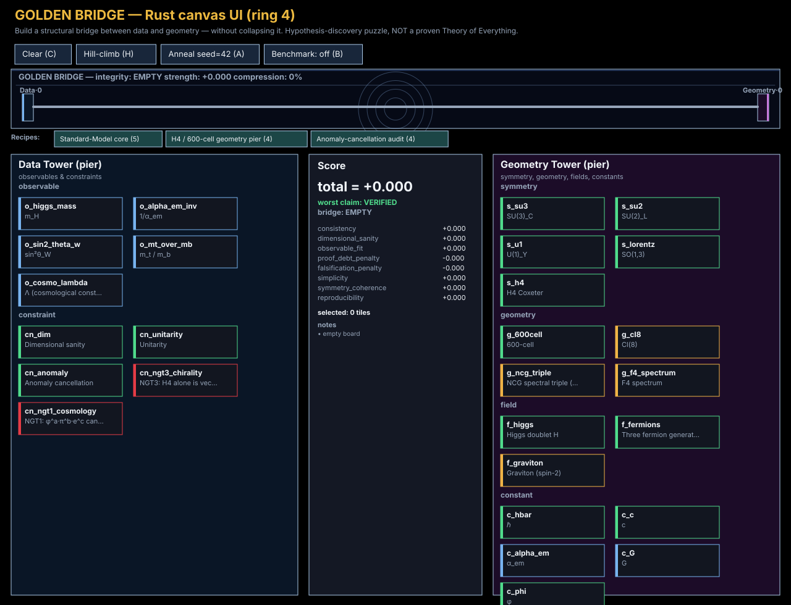

Build a structural bridge between data and geometry — without collapsing it.
Pure-Rust render model + Canvas2D shell via wasm-bindgen. The game state lives
in ring4_canvas::state::AppState; JavaScript only forwards mouse/key
events and translates render primitives into draw calls.
claim status; the worst such status is rendered next to
the total. A falsified tile collapses the bridge regardless of the rest.
You are seeing the static snapshot because the WebAssembly bundle for the interactive UI is not loaded. The bundle is intentionally not checked into the repository (it is build output — shipping it would defeat the Rust-as-source-of-truth contract documented in docs/CANVAS.md). Fresh clones and sandboxed previews therefore land on this view.

Snapshot of the initial GOLDEN BRIDGE layout — empty board, default catalog, no benchmark mode. Piers, golden deck, recipe rail, towers, and score panel are drawn from the same Rust render primitives the wasm shell uses. Clicks do nothing in this mode.
cd games/trinity_fold
wasm-pack build crates/ring4_canvas --target web --features wasm \
--out-dir ../../web/canvas/pkg
# Regenerate the static snapshot:
cargo run -p ring4_canvas --example snapshot_svg -- \
web/canvas/snapshot.svgSee docs/CANVAS.md for the rationale (Rust as source of truth, no JS mirror of game logic).